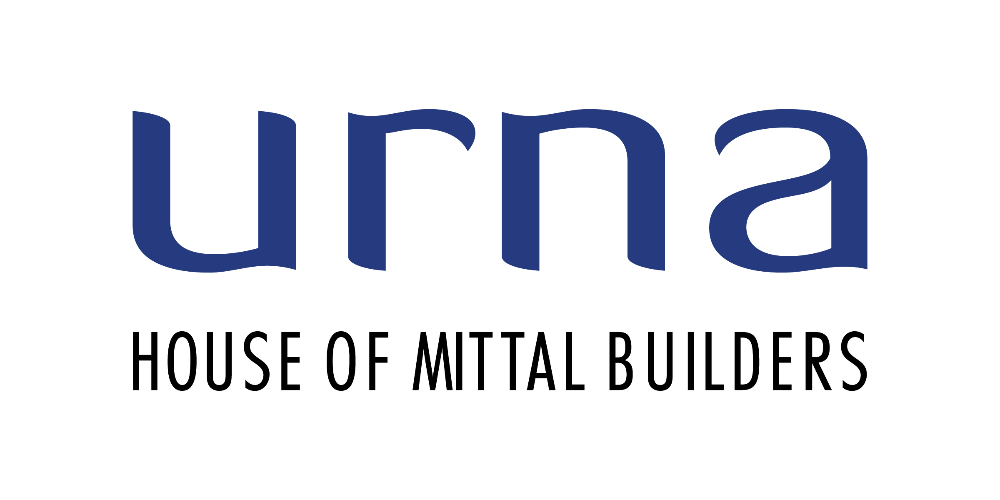

Vertical farm
Fresh food, grown where you live.

408A/Urna • Santacruz West
60 exclusive residences in Santacruz West.
The future of Mumbai, by the House of Mittal.
Welcome to 408A/Urna, set in the heart of it all, Santacruz West. It is a rare combination of prime location, uncompromising design and genuine responsibility.
Every home here is crafted with sustainable materials, energy-efficient systems and clean-air technology. Water is conserved, waste is minimised, and every detail is designed to give back more than it takes.
This is exclusivity with a conscience. Because the truest luxury isn't just living well today, it's knowing the world your children inherit will still be as beautiful and as exclusive.
408A/Urna sits on North Avenue Road, Santacruz West. A connected, refined address with easy access to the high-streets, clubs, schools, healthcare, workspaces and the everyday rhythm of the City that Never Sleeps. Yet designed for peace, calm and well-being.
Thoughtfully designed amenities that support movement, wellbeing, connection and everyday comfort.
Choose from a collection of 2, 3 and 4-bedroom residences designed around comfort, light, space and well-being. Luxury for today. Responsibility for tomorrow.
RERA P51800051382
What you need from a home is calm and well-being. This is what we build for, first.
Urna homes integrate natural elements and materials into the built environment, fostering a deeper connection with nature. We believe this is luxury. And this is what it means to design for tomorrow.
Fresh food, grown where you live.
Every drop collected, treated and reused.
Harnessing the power of the sun.
Natural ventilation and reduced heat gain.
Turning waste into a resource.
Spaces that reconnect people with nature.
The best homes do more than provide shelter. They quietly shape the way we live, work, connect and recharge.
Natural light enters. Fresh air circulates.
Fresh greens become part of your morning.
Materials, greenery and ventilation work quietly.
Water systems reduce dependence on external supply.
Solar systems support everyday living.
The pool, gym, terrace and shared spaces come alive.
Measured in comfort, calm and well-being.
Designed not only for today, but for decades ahead.
Here is a quick way to keep an eye on the project. Track construction, approvals and project milestones as 408A/Urna grows from vision to your home.
Completed
In progress
Upcoming
Upcoming
As per RERA
408A/Urna is the new generation of urban homes. Designed around well-being, sustainability and conscious luxury. We are building it for those who believe tomorrow can be built better. Come, experience it for yourself.